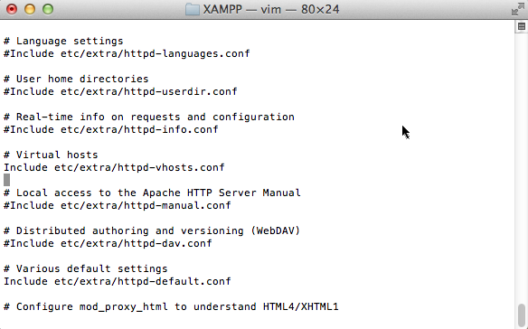
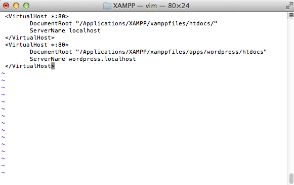
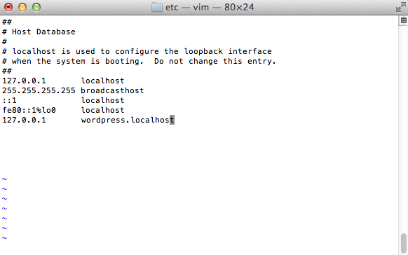
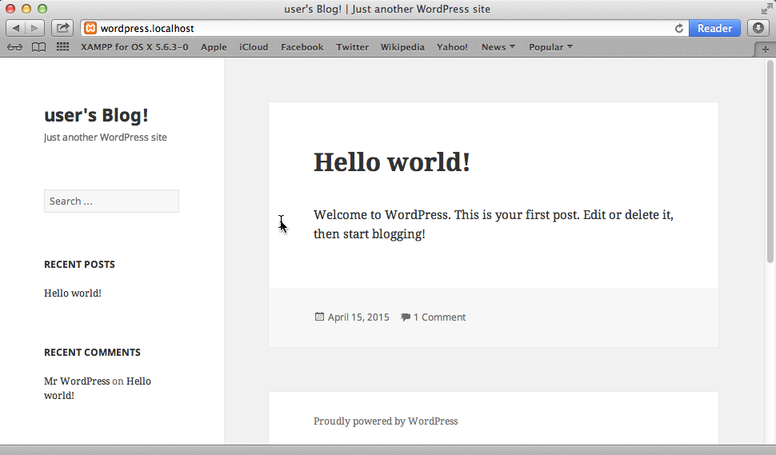

Configure Virtual Hosts
Apache makes it easy to have multiple websites or web applications running on the same physical server, and access each using a custom domain name. This is known as virtual hosting, and each virtual host can be mapped to a different subdirectory of the server.
This feature is especially useful in development scenarios, as it allows developers to isolate and access different applications using unique domain names. For example, the domains http://app01.localhost and http://app02.localhost could point to two separate applications on the same server. Or, you could create separate domains, such as http://client1/, http://client2/ and so on, for multiple client websites hosted on the same server.
| Virtual hosts created in this manner will not be accessible from other systems, unless those systems are separately configured to associate the custom domain used by the virtual host with the IP address of the XAMPP server. This guide walks you through the process of setting up a new virtual host with XAMPP, by creating and configuring an example host named wordpress.localhost for a WordPress installation. It assumes that you have an existing WordPress installation at /opt/lampp/apps/wordpress/htdocs/ and accessible via the URL http://localhost/wordpress. |
| You can install WordPress with just a few clicks using the Bitnami WordPress Module for XAMPP. |
Follow the steps below to create a virtual host:
-
Open a new terminal and ensure you are logged in as an administrator.
-
Change to your XAMPP installation directory (typically, /Applications/XAMPP) and open the httpd.conf file in the etc/ subdirectory using a text editor.
-
Within the file, find the following line and uncomment it by removing the hash symbol (#) at the beginning of the line.
Include etc/extra/httpd-vhosts.conf

-
Next, open the httpd-vhosts.conf file in the etc/extra/ subdirectory of your XAMPP installation directory. Replace the contents of this file with the following directives:
<VirtualHost *:80> DocumentRoot "/Applications/XAMPP/xamppfiles/htdocs/" ServerName localhost </VirtualHost> <VirtualHost *:80> DocumentRoot "/Applications/XAMPP/xamppfiles/apps/wordpress/htdocs" ServerName wordpress.localhost </VirtualHost>This contains two virtual host configuration blocks:
-
The first block is the default or fallback virtual host, which is used for all requests that are not matched by subsequent blocks.
-
The second block sets up a virtual host named wordpress.localhost. The DocumentRoot directive specifies the directory to be used when serving requests for this virtual host (in this case, the WordPress installation directory), while the ServerName directive specifies the custom domain name for the virtual host.

To add more virtual hosts, simply duplicate the second virtual host block and modify the port number, DocumentRoot and ServerName directives as per your requirements. For example, if you want to use SSL with your custom domain name, you can add a new virtual host block for port 443.
If you plan to have a large number of virtual hosts with very similar configuration, consider using wildcard-based subdomains with your virtual hosts. -
-
Restart Apache using the XAMPP control panel for your changes to take effect.

-
At this point, your virtual host is configured. However, if you try browsing to the wordpress.localhost domain, your browser will show a failure notice, since this domain does not exist in reality. To resolve this, it is necessary to map the custom domain to the local IP address. To do this, open the /etc/hosts file and add the following line to it:
127.0.0.1 wordpress.localhost

This takes care of mapping the wordpress.localhost domain name to the local machine, which always has the IP address 127.0.0.1.
At this point, you should be able to enter the URL http://wordpress.localhost in your browser’s address bar and see your WordPress installation. Here’s an example of what you should see:
